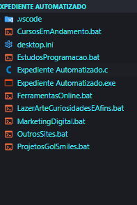
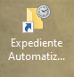
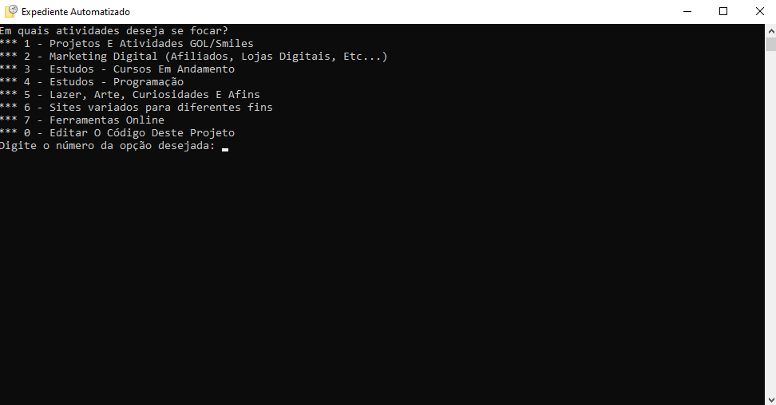
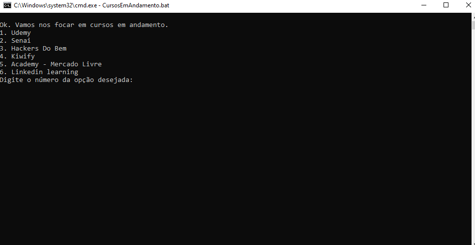

Concebi este projeto com o objetivo de armazenar, em um único lugar, os links dos aplicativos e portais que utilizo ao longo da semana, durante o tempo em que estou em frente ao computador.
Com o tempo, encontrei maneiras mais eficientes e práticas de me organizar, mas ainda gosto de utilizar esse programinha para salvar links de mangás e blogs que eu gosto de ler e acompanhar, além de documentos de bibliotecas úteis para meus projetos.
De todo modo, este projeto foi extremamente útil para que eu aprendesse mais sobre programação em Batch Script e C.
A estrutura do projeto é simples: O arquivo principal, Expediente Automatizado.c, corresponde ao menu principal da aplicação. Cada item deste menu direciona para um script .bat específico.
Expediente Automatizado.c
#include <stdio.h>
#include <conio.h>
#include <locale.h>
#include <stdlib.h>
#include <windows.h>
//#region função para rodar os script .bat
void runScript(const char *scriptName){
char command[100];
sprintf(command, "start %s", scriptName);
system(command);
}
//#endregion
int main() {
while (1) {
system("chcp 65001 > nul");
setlocale(LC_ALL,"pt_BR.UTF-8");
system("cls");
printf("Em quais atividades deseja se focar?\n");
printf("*** 1 - Projetos E Atividades GOL/Smiles\n");
printf("*** 2 - Marketing Digital (Afiliados, Lojas Digitais, Etc...)\n");
printf("*** 3 - Estudos - Cursos Em Andamento\n");
printf("*** 4 - Estudos - Programação\n");
printf("*** 5 - Lazer, Arte, Curiosidades E Afins\n");
printf("*** 6 - Sites variados para diferentes fins\n");
printf("*** 7 - Ferramentas Online\n");
printf("*** 0 - Editar O Código Deste Projeto\n");
char choice;
printf("Digite o número da opção desejada: ");
choice = _getch();
printf("%c\n", choice);
switch (choice){
case '1':
runScript("ProjetosGolSmiles.bat");
break;
case '2':
runScript("MarketingDigital.bat");
break;
case '3':
runScript("CursosEmAndamento.bat");
break;
case '4':
runScript("EstudosProgramacao.bat");
break;
case '5':
runScript("LazerArteCuriosidadesEAfins.bat");
break;
case '6':
runScript("OutrosSites.bat");
break;
case '7':
runScript("FerramentasOnline.bat");
break;
case '0':
system("code .");
break;
default:
break;
}
exit(0);
}
return 0;
}
A função runScript é usada para executar nossos scripts .bat. Note que:
- Ela não retorna nenhum valor por ser uma função do tipo
void const char *scriptName: Um ponteiro constante para um caractere, representando o nome do script a ser executado. Oconstindica que o conteúdo apontado pelo ponteiro não deve ser modificado pela função.- Um array de caracteres (
char) de tamanho 100, que será usado para armazenar o comando que será executado. sprintf: Função da biblioteca padrão do C que escreve uma string formatada em um buffer.command: Buffer onde a string formatada será armazenada."start %s": String de formato.starté o comando (no contexto de sistemas Windows,starté usado para iniciar um programa ou script).%sé um especificador de formato que será substituído pelo valor descriptName.scriptName: Nome do script que será inserido no lugar de%s.system: Função da biblioteca padrão do C que passa o comando para o interpretador de comandos do sistema operacional. Executa o comando armazenado na variávelcommand.
O loop infinito permite que o menu seja mostrado repetidamente. No entanto, o programa termina com exit(0) após executar uma ação.
- O
system("chcp 65001 > nul");- Configura o console para usar UTF-8, garantindo que caracteres especiais sejam exibidos corretamente. setlocale(LC_ALL, "pt_BR.UTF-8");- Define a localidade para Português do Brasil com UTF-8, afetando a formatação de saída, como datas e números.system("cls");- Limpa a tela do console, útil para manter a interface do usuário limpa e legível._getchlê um caractere do console sem exibi-lo, permitindo que a escolha do usuário seja capturada discretamente.- Estrutura
switchpara escolha
Arquivos .bat
Nesse nosso projeto, os arquivos .bat receberão essencialmente a mesma estrutura. A única coisa que diferenciará um arquivo do outro é o conteúdo que armazenam, as URLs que eles contém.
Estrutura básica código dos arquivos .bat
@echo off
echo.
chcp 65001 > nul
set "firefoxPath=C:\Program Files\Mozilla Firefox\firefox.exe"
set "edgePath=C:\Program Files (x86)\Microsoft\Edge\Application\msedge.exe"
set "chromePath=C:\Program Files (x86)\Google\Chrome\Application\chrome.exe"
echo Ok. Confira as opções abaixo:
echo 1.Coleção de links 1
echo 2.Coleção de links 2
::inclua quantas opções desejar, e dentro da estrutura if, inclua quantos links desejar
set /p escolha=Digite o número da opção desejada:
if "%escolha%"=="1" (
start "link 1" "%edgePath%" "https://www.link1.com"
start "link 2" "%edgePath%" "https://www.link2.com"
)
if "%escolha%"=="2" (
start "link 1" "%edgePath%" "https://www.link1.com"
start "link 2" "%edgePath%" "https://www.link2.com"
)
exit
Para finalizarmos o nosso projeto agora só resta criarmos um .exe do nosso arquivo .c
Você pode criar um atalho desse .exe e deixá-lo na área de trabalho
O diretório do meu projeto no fim ficou assim:

Aqui está o atalho do executável que eu criei na área de trabalho:

Este é o programa em execução:

